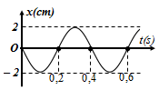

Bài 3 · Vận tốc, gia tốc trong dao động điều hoà · 2 câu
PHẦN IV. Tự luận
Viết lời giải đầy đủ. Bấm “Nộp để AI gợi ý điểm”: AI chấm gợi ý theo biểu điểm, giáo viên sẽ duyệt điểm chính thức.
1
Vận dụng
Vật dao động điều hòa có đồ thị tọa độ như hình bên. Sử dụng đồ thị để tính các đại lượng sau:

a) Tốc độ của vật ở thời điểm t = 0 s. b) Gia tốc cực đại của vật. c) Gia tốc của vật tại thời điểm t = 0,1 s.
2
Vận dụng
Hình bên là đồ thị biểu diễn sự phụ thuộc của vận tốc v theo thời gian t của một vật dao động điều hòa. Sử dụng đồ thị để tính các đại lượng sau: a) Tốc độ của vật ở thời điểm t = 0 s. b) Viết phương trình dao động của vật.